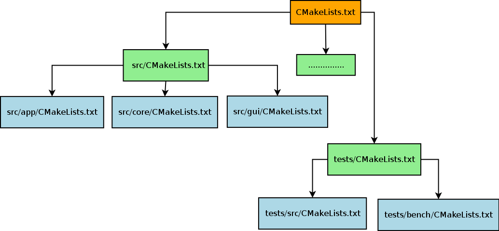
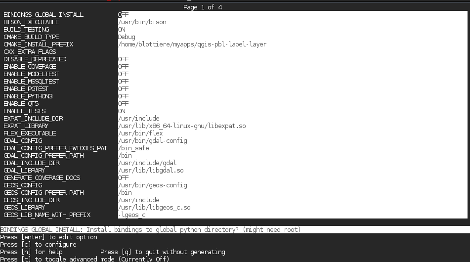
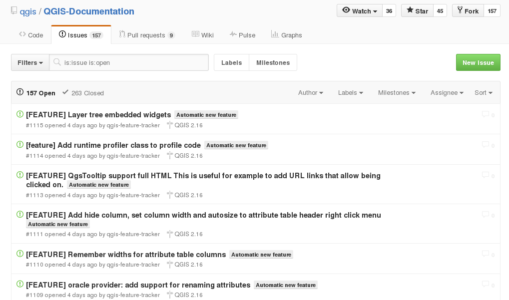
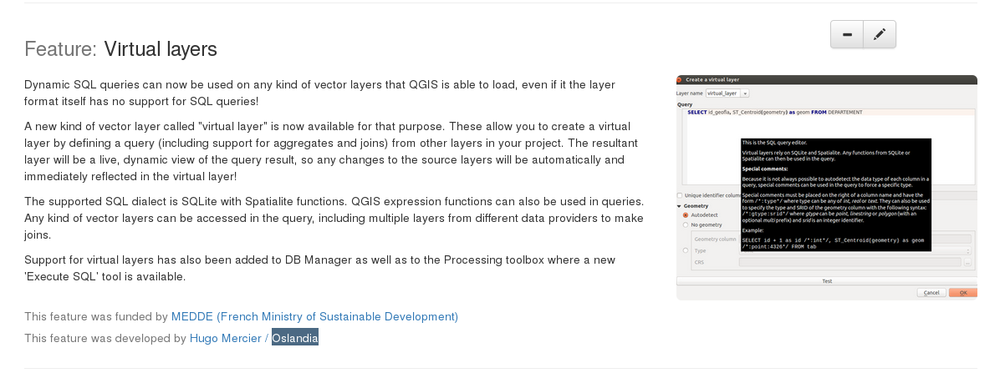

Développement QGIS - C++
Paul Blottiere
Décembre 2017
Paul Blottiere
Décembre 2017

main
#include "hello.h"
int main( int argc, char** argv)
{
Hello h1( 1 );
h1.print();
const int n2 = 2;
Hello *h2 = new Hello( n2 );
h2->print();
delete h2;
return 0;
}
$ ./main
Hello 1
Hello 2
Header : déclaration
#ifndef HELLO_H
#define HELLO_H
class Hello
{
public:
Hello( int number );
~Hello();
void print() const;
private:
int mNumber;
};
#endif
Source : implémentation
#include <iostream>
#include "hello.h"
Hello::Hello( int number )
: mNumber( number )
{
}
Hello::~Hello()
{
}
void Hello::print() const
{
std::cout << "Hello " << mNumber << std::endl;
}
Méthode virtuelle pure ⟶ Classe abstraite
class HelloV2
{
public:
Hello( const std::string &word );
virtual ~Hello();
virtual void print() const = 0;
protected:
void hello();
private:
std::string mWord;
}
Méthode virtuelle pure ⟶ Classe abstraite
HelloV2::HelloV2( const std::string &word )
: mWord( word )
{
}
HelloV2::~HelloV2()
{
}
void HelloV2::hello()
{
std::cout << "Hello " << mWord << "!" << std::endl;
}
Héritage
class HelloWorldV2 : public HelloV2
{
public:
HelloWorldV2();
~HelloWorldV2();
void print() const override;
};
Héritage
HelloWorldV2::HelloWorldV2()
: HelloV2( "world!" )
{
}
HelloWorldV2::~HelloWorldV2()
{
}
void HelloWorldV2::print() const
{
std::cout << "HelloWorldV2 print: " << std::endl;
this.hello();
}
Surcharge / méthode statique
class Printer
{
static void hello( const HelloWorldV2 &h ) { h.print(); }
static void hello( const Hello &h ) { h.print() ); }
}
int main( int argc, char** argv )
{
Hello h1( 10 );
Printer::hello( h1 );
HelloWorldV2 h2;
Printer::hello( h2 );
}
Sructures de contrôle : if
int a = ...;
if ( a > 100 || a < 0 )
a = 0;
else if ( a == 42 )
std::cout << "Awesome!" << std::endl;
else
std::cout << "Nothing todo" << std::endl;
Sructures de contrôle : switch/case
int a = ...;
switch ( a )
{
case 1:
std::cout << "a = 1" << std::endl;
break;
case 2:
std::cout << "a = 2" << std::endl;
break;
default:
std::cout << "Doesn't matter" << std::endl;
}
Sructures de contrôle : for
# entier
int a = 0;
for ( int i = 0; i < 10; i++ )
a += 1;
# iterateur
typedef std::list<int> Values;
Values values;
values.insert( values.begin(), 3 );
values.insert( values.begin(), 30 );
Values::iterator it;
for( it = values.begin(); it != values.end(); it++ )
a += *it;
Sructures de contrôle : while
int i = 0;
int a = 0;
while ( i < 10 )
{
a += i;
i++;
}
Compilateur
Sous GNU/Linux: g++
$ g++ main.cpp
Construction d'une librairie partagée et linkage :
$ gcc -Wall -fPIC -c mylib.c
$ gcc -shared -Wl,-soname,libmylib.so.1 -o libmylib.so.1.0 mylib.o
$ g++ main.cpp -L lmylib.so
EXERCICE 1

git
git : workflow QGIS simple
$ git clone https://github.com/username/QGIS # clone d'un fork
$ git branch new_feature
$ git checkout new_feature
......
$ git add ...
$ git commit -m "[FEATURE] my new feature description"
$ git push origin new_feature
.....
$ git checkout master
$ git remote add upstream https://github.com/qgis/QGIS
$ git fetch upstream
$ git merge upstream/master
....
$ git checkout new_feature
$ git rebase master
$ git push -f origin new_feature
https://www.qgis.org/en/site/getinvolved/development/qgisdevelopersguide/codingstandards.html
git : hook
Pour vérifier automatiquement les coding rules QGIS à chaque commit :
$ ln -s scripts/prepare-commit.sh .git/hooks/pre-commit
git : hook
$ git add file_badly_indented.cpp
$ git commit
flip not found
formatted file_badly_indented.cpp
Files changed (see astyle.c68eaeb92923638518e802baf410d55eed766f37.diff)
$ git status
On branch master
Your branch is up-to-date with 'origin/master'.
Changes to be committed:
(use "git reset HEAD <file>..." to unstage)
modified: file_badly_indented.cpp
Changes not staged for commit:
(use "git add <file>..." to update what will be committed)
(use "git checkout -- <file>..." to discard changes in working directory)
modified: file_badly_indented.cpp
CMake : architecture QGIS
CMake : compilation
$ mkdir build && cd build
$ cmake .. -DCMAKE_INSTALL_PREFIX=/usr/local
$ make -jN
CMake : installation/désinstallation
$ sudo make install
$ sudo xargs rm < install_manifest.txt
CMake : ccmake
CMake : compilation QGIS
$ cd <QGIS-DIR>
$ mkdir -p ~/myapps
$ mkdir build && cd build
$ ccmake ..
.....
$ make -jN
$ make install
La dernière option permet de réparer des fichiers mal indentés et DÉJÀ commités grâce au script scripts/astyle.sh.
CMake : variable d'environnement
SET(LIBHELLO_DIR ${CMAKE_SOURCE_DIR}/src/lib)
CMake : ajouter un sous répertoire ayant un CMakeLists.txt
ADD_SUBDIRECTORY(src)
CMake : compiler une librairie partagée
ADD_LIBRARY(hello SHARED ${SOURCES})
CMake : compiler un exécutable
ADD_EXECUTABLE(main ${MAIN_SOURCES})
CMake : link avec une librairie
LINK_DIRECTORIES(${LIBHELLO_DIR})
TARGET_LINK_LIBRARIES(main hello)
CMake : ajouter un chemin d'include
INCLUDE_DIRECTORIES(${LIBHELLO_DIR})
CMake : installer une librairie
INSTALL(TARGETS hello DESTINATION lib)
EXERCICE 2

main
#include <QApplication>
#include <QTextEdit>
int main( int argc, char** argv )
{
QApplication app( argv, argc );
QPushButton button;
button.setText( "Quit" );
button.setToolTip( "Quit tooltip" );
button.show();
return app.exec();
}
slot/signal : utilisation
QObject::connect( button, SIGNAL( clicked() ), app, SLOT( quit() ) );
slot/signal : déclaration dans le header
class CustomButton : public QPushButton
{
Q_OBJECT
public:
CustomButton();
~CustomButton();
signal:
void onQuitDone();
private slots:
void onQuit();
}
translate - TS file
<?xml version="1.0" encoding="utf-8"?>
<!DOCTYPE TS>
<TS version="2.0" language="fr_FR">
<context>
<name>QPushButton</name>
<message>
<source>Save</source>
<translation>Sauvegarder</translation>
</message>
</context>
</TS>
translate - linguist

translate - QTranslator
QApplication app( argc, argv );
QTranslator translator;
translator.load(qm_file);
app.installTranslator( &translator );
QPushButton button( QObject::tr( "Hello world!" ) );
CMake - détection de QT
FIND_PACKAGE(Qt4 REQUIRED)
CMake - link
INCLUDE(${QT_USE_FILE})
ADD_DEFINITIONS(${QT_DEFINITIONS})
TARGET_LINK_LIBRARIES(myexe ${QT_LIBRARIES})
CMake - moc
SET(MYLIB_HEADERS
${MYLIB_DIR}/file_qobject.h)
QT4_WRAP_CPP(MYLIB_MOC ${MYLIB_HEADERS})
ADD_EXECUTABLE(myexe ${SOURCES} ${MYLIB_MOC})
CMake - translation
MACRO(ADD_TRANSLATION_FILES _sources )
FOREACH (_current_FILE ${ARGN})
GET_FILENAME_COMPONENT(_in ${_current_FILE} ABSOLUTE)
GET_FILENAME_COMPONENT(_basename ${_current_FILE} NAME_WE)
SET(_out ${CMAKE_BINARY_DIR}${CMAKE_DATA_DIR}/i18n/${_basename}.qm)
ADD_CUSTOM_COMMAND(
OUTPUT ${_out}
COMMAND ${QT_LRELEASE_EXECUTABLE}
ARGS -verbose ${_in} -qm ${_out}
DEPENDS ${_in}
)
SET(${_sources} ${${_sources}} ${_out} )
ENDFOREACH (_current_FILE)
ENDMACRO(ADD_TRANSLATION_FILES)
# make sure the output directory exists
file(MAKE_DIRECTORY ${CMAKE_BINARY_DIR}${CMAKE_DATA_DIR}/i18n)
SET(TS_FILES texts_fr.ts texts_es.ts)
ADD_TRANSLATION_FILES (QM_FILES ${TS_FILES})
smart pointer - QScopedPointer
MyClass *myClass = new MyClass();
myClass->print();
delete myClass;
QScopedPointer< MyClass > myClass;
myClass.reset( new MyClass() );
myClass.data()->print();
EXERCICE 3

map
feature
divers
Beaucoup de classes!!

Racine
src : les répertoires principaux
Application sans GUI
#include <QApplication>
#include <qgsapplication.h>
int main(int argc, char *argv[])
{
QApplication app(argc, argv);
QgsApplication::setPrefixPath("/usr/local", true);
QgsApplication::initQgis();
QgsApplication::exitQgis();
return 0;
}
Application avec GUI
#include <QApplication>
#include <qgsapplication.h>
#include <qgsmapcanvas.h>
int main(int argc, char *argv[])
{
QApplication app(argc, argv);
QgsApplication::setPrefixPath("/usr/local", true);
QgsApplication::initQgis();
QgsMapCanvas canvas;
canvas.show();
int rc = app.exec();
QgsApplication::exitQgis();
return rc;
}
EXERCICE 4
Lors d'une PR, les builds sont réalisés sur plusieurs OS : Linux, OSX et Windows.
http://dash.orfeo-toolbox.org/index.php?project=QGIS
header
/***************************************************************************
<filename>
begin : <month> <year>
copyright : (C) <year> <Prenom> <Nom>, <Entrprise>
email : <mail>
***************************************************************************/
/***************************************************************************
* *
* This program is free software; you can redistribute it and/or modify *
* it under the terms of the GNU General Public License as published by *
* the Free Software Foundation; either version 2 of the License, or *
* (at your option) any later version. *
* *
***************************************************************************/
doxygen
/** Description de la méthode.
* @param nom description du paramètre1
* @param nom description du paramètre2
* @return description de la valeur de retour
* @note added in QGIS 2.XX
*/
Documenter tout ce qui est public ou protected au minimum!!
https://github.com/qgis/QGIS-Documentation
Documentation à compléter lors de l'ajout d'une feature!
[FEATURE] My new feature : création automatique d'issue
changelog
C++ : unit class test
#include <QtTest/QtTest>
class TestQgsMyClass : public QObject
{
Q_OBJECT
public:
TestQgsMyClass() {}
private slots:
void initTestCase(); // executed before the first test function
void cleanUpTestCase(); // executed after the last test function
void testfunction1();
void testfunction2();
};
QTEST_MAIN( TestQgsMyClass )
C++ : QGIS environment
void TestQgsMyClass::initTestCase()
{
QgsApplication::init();
QgsApplication::initQgis(); // if needed
}
void TestQgsMyClass::cleanUpTestCase()
{
QgsApplication::exitQgis(); // if needed
}
void TestQgsMyClass::testfunction1()
{
QVERIFY( boolean predicate );
QCOMPARE( checked_value, waited_value );
QgsRenderChecker checker;
checker.compareImages(....);
}
Python : unittest
from qgis.testing import (start_app,
unittest)
from utilities import unitTestDataPath
start_app()
TEST_DATA_DIR = unitTestDataPath()
class TestQgsClass(unittest.TestCase):
def __init__(self, methodName):
unittest.TestCase.__init__(self, methodName)
def test1(self):
self.assertEqual(...)
self.assertTrue(....)
self.assertAlmostEqual(....)
if __name__ == '__main__':
unittest.main()
Python : interface
Mock object pour QgisInterface : python/testing/mocked.py
from qgis.testing.mocked import get_iface
my_iface = get_iface()
SIP
Recopie du .h sauf :
- mot clé override
- implémentation
- les includes
- les éléments private
En plus :
class QgsMapRendererJob : QObject
{
%TypeHeaderCode
#include <qgsmaprendererjob.h>
%End
........
EXERCICE 5